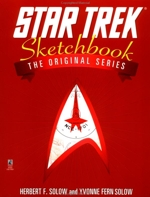
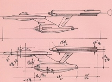
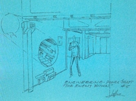
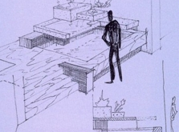
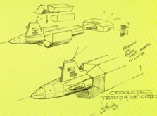
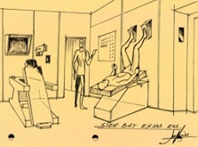
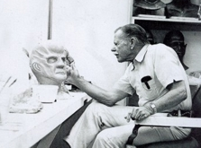

|


Livros de Referência
|

| ''STAR
TREK: SKETCHBOOK" |
 |
|
|
| Review
por Leandro M. Pinto |
| Entre inúmeros elementos marcantes que ajudam a diferenciar Jornada nas Estrelas: A Série Original do restante da franquia de ficção-científica a qual foi o início, certamente podemos incluir todo o trabalho de design da produção dos 79 episódios originais e o piloto original "The Cage". Há aqueles que consideram todo o estilo "datado" ou "cafona" demais para sequer cogitarem assistir a episódios da Série Original, enquanto há também aqueles que vêem nestes elementos uma peça absolutamente fundamental daquilo que fez Jornada nas Estrelas o que é hoje – querer separar isto da série em si seria acabar com o "todo" que faz da Série Original única e marcante. De uma maneira ou de outra, acredito que não se pode negar que os elementos de design, figurino, maquilagem e afins que estão presentes na primeira manifestação da franquia são elementos únicos, com visual e características que representam bem os valores da época em que foram concebidos e foram o resultado de trabalho duro e dedicado com os recursos que estavam disponíveis na época. E portanto, são elementos que merecem uma avaliação séria e cuidadosa, e conhecer este trabalho ajuda imensamente a conhecermos melhor Jornada nas Estrelas como um todo. Para ajudar nisto foi publicado Star Trek Sketchbook, escrito e compilado por Herbert Solow, então vice-presidente de produção da Desilu na época da produção da série, e sua esposa, Yvonne Solow. A obra faz uma passagem pelo trabalho de quatro importantes indivíduos na produção de Jornada nas Estrelas: A Série Original: Matt Jefferies, Wah Chang, Fred Phillips e Willian Theiss.  Um destes detalhes diz respeito a questão de que o seu departamento era um dos primeiros na produção a receberem a primeira versão definitiva dos roteiros (a chamada "Capa Amarela com Páginas Brancas"), Jefferies também tinha acesso ao primeiro rascunho da história do episódio feito pelo escritor. Este era um procedimento corriqueiro na produção da Série Original, mas incomum se considerando os procedimentos regulares da produção de TV. Isto ajudava, certamente, a se ter algum tempo razoável para preparo e elaboração dos sets e demais necessidades de design de dados episódios, ainda que por "razoável", entenda-se meras poucas semanas – três a cinco em média. Esta questão do tempo, aliada a sempre presente questão orçamentária, sem dúvida foram alguns dos fatores que contribuíram para a Série Original possuir o seu típico "look and feel", seja para o bem ou para o mal. Há também a já bastante conhecida explicação de Jefferies sobre a origem da matrícula de casco da Enterprise, NCC-1701, onde as letras NCC tiveram sua origem em Jefferies considerar a matrícula de seu biplano Waco de 1935, com N da matrícula americana de aviação significando aeronave americana, e C como civil. Jefferies adicionou um C extra para dar mais presença a sigla, e os números 1, 7 e 0 foram escolhidos devido a facilidade que poderiam ser reconhecidos em tela, mesmo de relance. Um dado interessante é o designer arriscar uma dica "dentro do universo" para o número ser 1701, que supostamente significaria a nave ser baseada no 17º design federado de nave estelar, e ser a primeira da série, daí 01. Seja como for, o cânone estabelecido ao longo do desenvolvimento de Jornada nas Estrelas enquanto universo de ficção fez com que esta explicação de Jefferies já não seja mais possível, mas em todo o caso, é a origem para esta hipótese "dentro-do-universo" que vez e outra é comentada nos idos do fandom afora. Temos também bastantes detalhes gerais sobre a gênesis do modelo geral da Enterprise, incluindo esboços diversos do famoso modelo de "anel em volta de pescoço longo", esboço este visto no painel de "algumas Enterprise" durante Jornada nas Estrelas: O Filme.  Também temos na obra inúmeros detalhes sobre a criação de outras naves como o desenho geral dos cruzadores de batalha Klingons e os shuttles federados utilizados pela Enterprise, além também de inúmeros outros elementos como armas diversas, feisers, consoles de computador, e outros "props" para cenário. O próprio tubo Jefferies é lembrado por ele mesmo como tendo nascido da necessidade que tinham de terem disponíveis em um espaço pequeno e prático inúmeros "sistemas técnicos" necessários de serem retratados em tela, para assim não se gastar valiosos recursos de produção de maneira frívola. O conceito do "tubo de serviço" veio bem a calhar, e a equipe de produção rapidamente o apelidou de "Tubo Jefferies", com tal termo vindo a entrar no cânone do universo da série quando da produção de roteiros para Jornada nas Estrelas: A Nova Geração. Mas um ponto interessante em particular desta obra são as inúmeras fotos da maquete dos sets de filmagem tal qual eles seriam se todos fossem montados no Estúdio 9 da Desilu ao mesmo tempo. A distribuição dos sets não obedece aquilo que seria o layout verdadeiro da nave, é claro, mas sim como os diferentes ambientes eram montados dentro do estúdio para as filmagens. Jefferies fez esta maquete em seu próprio tempo livre e com seus próprios recursos, mas ele considera que foi um trabalho valioso, especialmente nos estágios iniciais de filmagem dos primeiros episódios. Esta única visão geral em 3D dos sets ajudou imensamente os diretores dos episódios a terem uma visão geral dos sets, e poderem assim planejar as maneiras mais adequadas de filmagem e produção de seus respectivos episódios. O seguinte na compilação é Willian Ware Theiss, que teve uma vasta carreira que inclui trabalhos em filmes como Spartacus e A Pantera Cor-de-Rosa, mas o seu trabalho mais amplo certamente é na Série Original, onde atuou como principal figurinista e designer. Theiss sempre foi um tanto quanto recluso, e com pouco tempo e recursos a sua disposição, nunca foi dado a frivolidades no set – trabalhava fervorosamente para conseguir os resultados que desejava para a melhor representação através da indumentária do universo que estava sendo criado para a Série Original.  Em relação aos uniformes federados, muitos já conhecem a minha indisposição geral contra eles, no que diz respeito a representarem "uniformes do futuro". Para tal pretensão, eles não realmente serviram de muito: os uniformes da Frota Estelar são basicamente roupas comuns – não protegem dos elementos, não são térmicos, não tem grandes capacidades defensivas, não se adaptam a camuflagem, rasgam fácil, e poraí vai. Sim, eu considero grandes descontos para a suspensão de descrença baseado nas necessidades de produção de uma série televisiva, e tal cuidado deve ser feito especialmente para o trabalho de Theiss na Série Original, mas seja como for, é algo a se mencionar. Para não falar nada, claro, que com alguma inserção criativa de elementos nas histórias, inúmeras "características mais avançadas" poderiam fazer parte dos uniformes, bastando-se apenas considerar determinados usos e capacidades para a vestimenta – o que não pediria nenhum acréscimo de complicação no trabalho de figurino de Theiss. O que aconteceria, talvez, é que coisas como Willian Shatner não teria muitas oportunidades de aparecer de camisa rasgada após uma sessão de "kirk-fu" contra algum adversário....! Mas no que diz respeito a vestimenta geral de civis federados, aliens ou não, e outras espécies o trabalho foi muito criativo. O figurino da série sempre conseguiu ter uma presença marcante, tal qual, por exemplo, as composições de música incidental da Série Original, e são obras que rapidamente remetem como uma espécie de assinatura da série. Isto é particularmente válido para as vestimentas femininas, sempre desenhadas com um "q" de urban chic da época misturado a inspirações futuristas, e com traços que combinavam muitas fendas e decotes reveladores com composições de tecido muito colorido. Embora para a indumentária masculina isto não se destacasse tanto, por Theiss fazer um uso grande de macacões mesmo fora dos meros uniformes militares, ainda assim também há inúmeros exemplos de vestuário masculino marcante na série, especialmente quando se tratavam de espécies aliens. O seguinte na lista de trabalhos cobertos pela obra é Fred Phillips, e sua área é a de maquilagem. Fred Phillips teve inúmeros filmes no seu portfolio de trabalho, incluindo entre estes O Planeta dos Macacos, Dr. Jekyll e Mr. Hyde, e diversos outros, além de trabalhos televisivos como a série da ABC The Outer Limits. Desta forma, Fred ingressou na produção da série com bagagem e experiência.  Há inúmeros episódios que são muito marcantes pelo trabalho de maquilagem envolvido, como o próprio piloto inicial, "The Cage", com a maquilagem de Jeffrey Hunter como o deformado Capitão Pike, e as várias faces utilizadas por Susan Oliver, como Vina – a bela jovem sobrevivente entre os cientistas, a marcante escrava órion, a real face deformada. "The Deadly Years" também pediu um esmero em particular a maquilagem do elenco regular, em sua rápida transição por diferentes idades avançadas. Outro aspecto interessante da obra é avaliarmos alguns exemplos do trabalho de Phillips com os Klingons, sobre os quais ele trabalhou seguindo aquilo que Gene Coon visualizava para a espécie. Atrelado a isto, há também de se lembrar a velha folclórica história dos "Klingons da Série Original" vs os "Klingons de Jornada nas Estrelas: O Filme" (no qual Fred também trabalhou), e as mudanças pelas quais o design da maquilagem e próteses passou, sem que supostamente a espécie em si teria mudado de aparência. Polêmica e considerações canônicas à parte, é sempre interessante observar ambos os trabalhos e como independentemente de qualquer coisa, há um sentido claro de evolução tanto na técnica em si do processo de maquilagem da espécie, como também há traços que remetem uma "aparência klingon" à outra. Não devemos nos esquecer também que, embora o trabalho de maquilagem em uma série de ficção-científica como a Série Original seja mais lembrado pelas próteses aliens e elaboradas máscaras e afins, a série também pediu trabalhos mais convencionais na área, e também nisto o esforço de Fred e sua equipe se destacam. Ele não foi estranho a trabalhar na maquilagem de inúmeras grandes estrelas de Hollywood em sua carreira, como Luise Rainer, Marlene Dietrich, Janet Gaynor, Rita Hayworth, apenas para listar algumas. Desta forma, o trabalho dele com a maquilagem regular das atrizes também merece boa admiração e avaliação, e é uma das razões pelas quais a beleza feminina vista na Série Original tenha marcado tanta época e seja uma das características fortes da série.  É curioso conhecer, contudo, que o valioso trabalho de Chang para a produção de Jornada nas Estrelas: A Série Original passou largamente sem o devido crédito nos episódios, devido a questões sindicais. Ele havia iniciado o trabalho para a Desilu através da parceria que tinha em uma companhia denominada Projects Unlimited, mas tempos depois continuou a trabalhar de forma independente, provindo a equipe de produção de bons trabalhos no desenvolvimento e criação de "props", e inúmeras vezes trabalho em conjunto com Fred Phillips e Bill Theiss, para haver uma boa integração dos elementos que desenvolviam em particular. O agora icônico comunicador da Frota Estelar circa 2260's é criação sua, além também de itens como capacetes romulanos, os tribbles, a harpa vulcana, e o design e construção da primeira ave-de-rapina Romulana. O trabalho de Chang não incluiu apenas "props" e desenvolvimento de designs isolados, mas também incluiu a criação de diversos aliens que vimos na série, como os Gorn e o mostro de sal de "The Man Trap", uma de suas criações mais marcantes. Entre estas, também podemos destacar o "alter-ego" de Balok, de "The Corbomite Maneuver", e que é sempre lembrado pela sua aparição nos créditos finais dos episódios, na parte do "Executive in Charge of Production".  |